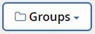
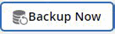
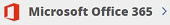

Verwalten von Sicherungen mit NetApp SaaS Backup für Office 365 Bearbeiten Sie auf GitHub Dokumentänderungen anfordern
Mitwirkende
Nachdem Sie den Installationsvorgang für NetApp SaaS Backup abgeschlossen haben, können Sie mit SaaS Backup für Office 365 Sicherungen von Microsoft Exchange Online, Microsoft OneDrive for Business und Microsoft SharePoint Online verwalten.
- Backup-Richtlinien
- Planen einer Sicherung oder Ändern der Sicherungshäufigkeit
- Durchführen einer sofortigen Sicherung eines Dienstes
- Aktualisieren der Sicherungsaufbewahrungsdauer
- Backup-Einstellungen aktualisieren
- Unterstützte Vorlagen für Microsoft SharePoint Online
- Unterstützte Apps für Microsoft SharePoint Online
Backup-Richtlinien
SaaS Backup für Office 365 verfügt über drei vordefinierte Ebenen von Sicherungsrichtlinien. Diese Richtlinienebenen variieren in Bezug auf Sicherungshäufigkeit und Aufbewahrungsdauer der Daten, je nachdem, ob Sie von SaaS Backup bereitgestellten Speicher oder BYOS verwenden.
Sie können Daten zwischen den drei Richtlinien verschieben, jedoch keine neuen Richtlinien erstellen oder die Parameter der vordefinierten Ebenen ändern.
Sicherungsrichtlinien für von SaaS Backup bereitgestellten Speicher
| Backup-Richtlinie | Sicherungshäufigkeit | Standard-Aufbewahrungszeitraum für Daten |
|---|---|---|
Tier 1 | Einmal alle 12 Stunden | 3 Jahre |
Rang 2 | Einmal alle 18 Stunden | 3 Jahre |
Stufe 3 | Einmal alle 24 Stunden | 3 Jahre |
Backup-Richtlinien für BYOS
| Backup-Richtlinie | Sicherungshäufigkeit | Standard-Aufbewahrungszeitraum für Daten |
|---|---|---|
Tier 1 | Einmal alle 12 Stunden | Für immer |
Rang 2 | Einmal alle 18 Stunden | Für immer |
Stufe 3 | Einmal alle 24 Stunden | Für immer |
Planen einer Sicherung oder Ändern der Sicherungshäufigkeit
Sie können Ihre ungeschützten Daten sichern, indem Sie sie einer Sicherungsrichtlinie zuweisen. Wenn einer Sicherungsrichtlinie ungeschützte Daten zugewiesen werden, werden diese in den Status PENDING versetzt, bis die nächste geplante Sicherung für die zugewiesene Richtlinie ausgeführt wird. Anschließend werden sie in den Status PROTECTED versetzt .
Wenn Sie die Sicherungshäufigkeit geschützter Daten ändern möchten, können Sie die Daten einer anderen Sicherungsrichtlinienebene zuweisen.
Klicken Sie im Dashboard in dem Feld des Dienstes, den Sie ändern möchten, auf die Nummer über PROTECTED oder UNPROTECTED .
Wenn Sie die Sicherungshäufigkeit geschützter Daten ändern möchten, klicken Sie auf GESCHÜTZT . Wenn Sie neu entdeckte Postfächer, Sites oder Meine Sites sichern möchten, wählen Sie UNGESCHÜTZT .

Wenn Sie die Sicherungsrichtlinie für freigegebene Postfächer sichern oder ändern, klicken Sie auf die Registerkarte GETEILT .
Wenn Sie die Sicherungsrichtlinie für Archivpostfächer sichern oder ändern, klicken Sie auf die Registerkarte ARCHIV .
Wenn Sie normale Postfächer sichern oder ändern, bleiben Sie auf der Registerkarte USER .Wählen Sie die Elemente aus, die Sie sichern möchten.
Klicken Sie auf das Menü Gruppen .
Wählen Sie die neue Richtlinienebene für die Sicherung aus.
Hinweis : Microsoft Office 365-Gruppen und Archivpostfächer können nur in die Tier 3-Richtlinie verschoben werden.Klicken Sie auf Übernehmen .
Durchführen einer sofortigen Sicherung eines Dienstes
Bei Bedarf können Sie eine sofortige Sicherung aller Microsoft Office 365-Dienste durchführen.
Klicken Sie im Dashboard auf die Nummer über PROTECTED im Feld des Dienstes, für den Sie eine sofortige Sicherung durchführen möchten.
Wenn Sie freigegebene Postfächer sichern , klicken Sie auf die Registerkarte GETEILT .
Wenn Sie Archivpostfächer sichern, klicken Sie auf die Registerkarte ARCHIVE .
Wenn Sie normale Postfächer sichern, bleiben Sie auf der Registerkarte BENUTZER .Wählen Sie die Elemente aus, die Sie sichern möchten.
Klicken Sie auf Jetzt sichern .

Eine Meldung zeigt an, dass die ausgewählten Dienste zur Sicherung in die Jobwarteschlange gestellt werden.Klicken Sie auf Bestätigen .
Eine Meldung zeigt an, dass der Sicherungsjob erstellt wurde.Klicken Sie auf Jobfortschritt anzeigen , um den Fortschritt der Sicherung zu überwachen.
Aktualisieren der Sicherungsaufbewahrungsdauer
Sie können den Zeitraum, in dem Daten für einzelne Ebenen, Postfächer, Sites und MySites gespeichert werden, in Jahren auf 7 Jahre, 10 Jahre oder für immer aktualisieren. Wenn alle Sicherungsstufen dieselbe Aufbewahrungsdauer haben, können Sie eine globale Aktualisierung durchführen, um gleichzeitig die Aufbewahrungsdauer für alle Mandanten zu ändern.
Aktualisieren der Sicherungsaufbewahrungsdauer für eine bestimmte Schicht
Klicken Sie im Dashboard auf einen Dienst.
Unter Sicherungsrichtlinien, klicken Sie auf das Dropdown - Menü neben Aufbewahrungszeitraum für die Stufe Sie ändern möchten.
Wählen Sie den gewünschten Aufbewahrungszeitraum aus der vordefinierten Liste.
Klicken Sie auf UPDATE RETENTION PERIOD .
Aktualisieren der Sicherungsaufbewahrungsdauer für Mandanten
Klicken Sie auf das Konfigurationssymbol
 neben Ihrer SaaS Backup-Benutzer-ID in der oberen linken Ecke.
neben Ihrer SaaS Backup-Benutzer-ID in der oberen linken Ecke. Klicken Sie auf Kontoeinstellungen .
Klicken Sie auf BEHALTEN UND FÜLLEN .
Gehen Sie wie folgt vor, um die Datenaufbewahrungsrichtlinie für einen bestimmten Benutzer in einem bestimmten Dienst zu aktualisieren:
Klicken Sie unter Data Retention Policies auf das Dropdown-Menü neben RETENTION PERIOD und wählen Sie den gewünschten Zeitraum aus der Liste der voreingestellten Zeiten aus.
Klicken Sie auf das Dropdown - Menü neben TYPE OF SERVICE und wählen Sie den Service , den Sie aktualisieren.
Geben Sie im Suchfeld den Benutzer, die Site oder MySite ein, die Sie aktualisieren möchten.
Wählen Sie den gewünschten Benutzer, die Site oder MySite aus den entsprechenden Ergebnissen aus.
Klicken
 .
. Suchen Sie weiter nach einzelnen Postfächern, Sites oder MySites und fügen Sie sie nach Bedarf hinzu.
Klicken Sie auf Speichern .
Die einzelnen von Ihnen ausgewählten Postfächer, Websites oder MySites werden auf den ausgewählten Aufbewahrungszeitraum aktualisiert.
Gehen Sie wie folgt vor, um die Datenaufbewahrungsrichtlinie auf Mandantenebene zu aktualisieren:
Unter Tenant Ebene Datenaufbewahrungsrichtlinien, klicken Sie auf den voreingestellten Zeiten Dropdown - Menü neben Aufbewahrungszeitraum und wählen Sie den Zeitraum , den Sie aus der Liste auswählen.
Klicken Sie auf Speichern .
Alle Sicherungsrichtlinienebenen werden auf den von Ihnen ausgewählten Aufbewahrungszeitraum aktualisiert.
Backup-Einstellungen aktualisieren
Sie können Ihre Sicherungseinstellungen aktualisieren, um verschiedene Sicherungsoptionen zu steuern. Die verfügbaren Sicherungseinstellungen variieren je nach Dienst.
| Backup-Einstellung | Beschreibung | aktiviert | Erhältlich in… |
|---|---|---|---|
Automatische Synchronisation | Aktiviert die automatische geplante Synchronisierung neu hinzugefügter oder gelöschter Benutzer, OneDrives oder Websitesammlungen alle 24 Stunden. | Standardmäßig | Microsoft Exchange Online |
Aktivieren Sie die Wiederherstellung wiederherstellbarer Elemente | Ermöglicht dem Benutzer, wiederherstellbare Microsoft Exchange-Elemente wiederherzustellen | Manuell | Microsoft Exchange Online |
Aktivieren Sie die Sicherung wiederherstellbarer Elemente | Aktiviert die Sicherung von wiederherstellbaren Microsoft Exchange-Elementen. Nur die Sicherungsrichtlinie der Ebene 1 ermöglicht die Sicherung wiederherstellbarer Elemente. | Manuell | Microsoft Exchange Online |
Workflows einbeziehen | Schließt Workflows in die Sicherung ein | Manuell | Microsoft SharePoint Online |
Listenansichten einschließen | Schließt die Ansicht der Liste in die Sicherung ein | Manuell | Microsoft SharePoint Online |
Versionsverlauf einschließen | Ermöglicht die Verwaltung mehrerer Dateiversionen in der Sicherung. | Standardmäßig | Microsoft SharePoint Online |
Anzahl der Versionen | Legt die Anzahl der zu pflegenden Sicherungsdateiversionen fest. | Standardmäßig auf 20 eingestellt | Microsoft SharePoint Online |
Klicken Sie im linken Navigationsbereich auf Dienste .
Klicken Sie auf Microsoft Office 365.
Klicken Sie unter Dienste verwalten auf das Symbol für die Sicherungseinstellungen
 neben dem Dienst, den Sie aktualisieren müssen.
neben dem Dienst, den Sie aktualisieren müssen.
Eine Liste Ihrer für den ausgewählten Dienst verfügbaren Sicherungseinstellungen wird angezeigt.Wählen Sie die gewünschten Backup-Einstellungen.
Klicken Sie auf Bestätigen .
Unterstützte Vorlagen für Microsoft SharePoint Online
Für Microsoft SharePoint Online-Sicherungen werden nur die folgenden Vorlagen unterstützt.
STS # 0 (Team Site)
BLOG # 0 (Blog-Site)
DEV # 0 (Entwicklerseite)
PROJECTSITE # 0 (Projektseite)
COMMUNITY # 0 (Community-Site)
BDR # 0 (Document Center)
COMMUNITYPORTAL # 0 (Gemeinschaftsportal)
ENTERWIKI # 0 (Enterprise WIKI)
EHS # 1 (Root Site)
EHS # 0 (Root-Site)
SITEPAGEPUBLISHING # 0 (Kommunikationsseite)
GROUP # 0 (Gruppenwebsitesammlungspräfix)
STS # 1 (leere Seite)
STS # 2 (Dokumentarbeitsbereich)
STS # 3 (Modern Team Site)
APP # 0 (App-Vorlage)
Unterstützte Apps für Microsoft SharePoint Online
Die folgenden Apps werden für Microsoft SharePoint Online-Sicherungen unterstützt.
Benutzerdefinierte Liste
Abzeichen (Community Site)
Dokumentbibliothek
Stilbibliothek
Umfrage
Verknüpfung
Ankündigung
Kontakt
Kalender
Diskussionsforum
Fotos
Bildbibliothek
Inhaltswebparts
Listenvorlagen-Galerie
Masterseiten-Galerie
Site Pages
Benutzerdefinierte Liste in der Datensatzansicht
Lösungsgalerie
Themengalerie
Komponierte Looks
Gesponserte Links
Aufgaben
Posts (Blog-Site)
Kommentare (Blog-Site)
Community-Diskussionen (Community-Site)
Kategorien (Blog Site)
Community-Kategorien (Community-Site)
Bericht
Wiki-Seiten
Websitesammlungsbilder
Community-Mitglieder (Community-Site)
Fehlersuche
Datensatzbibliothek
Links teilen